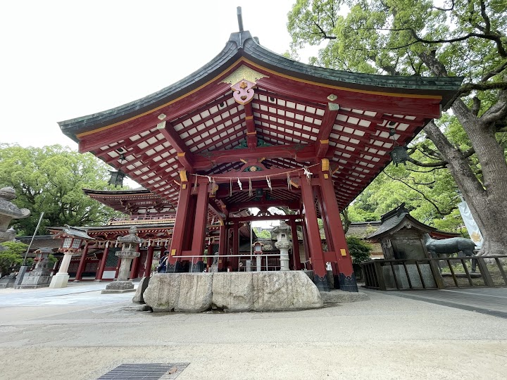
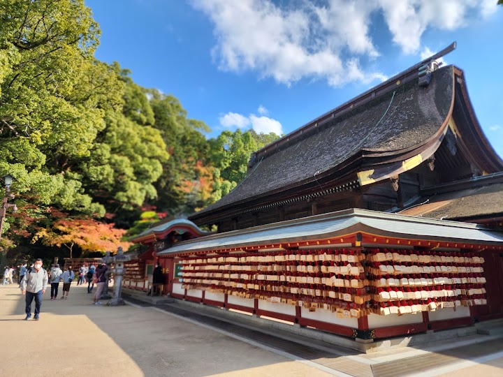
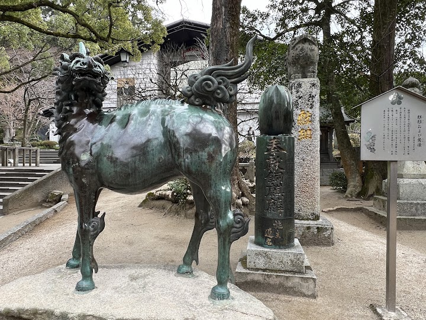
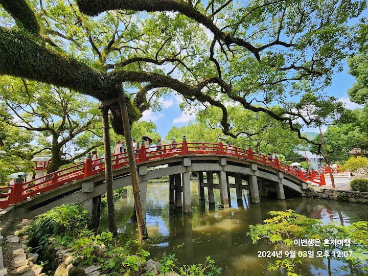
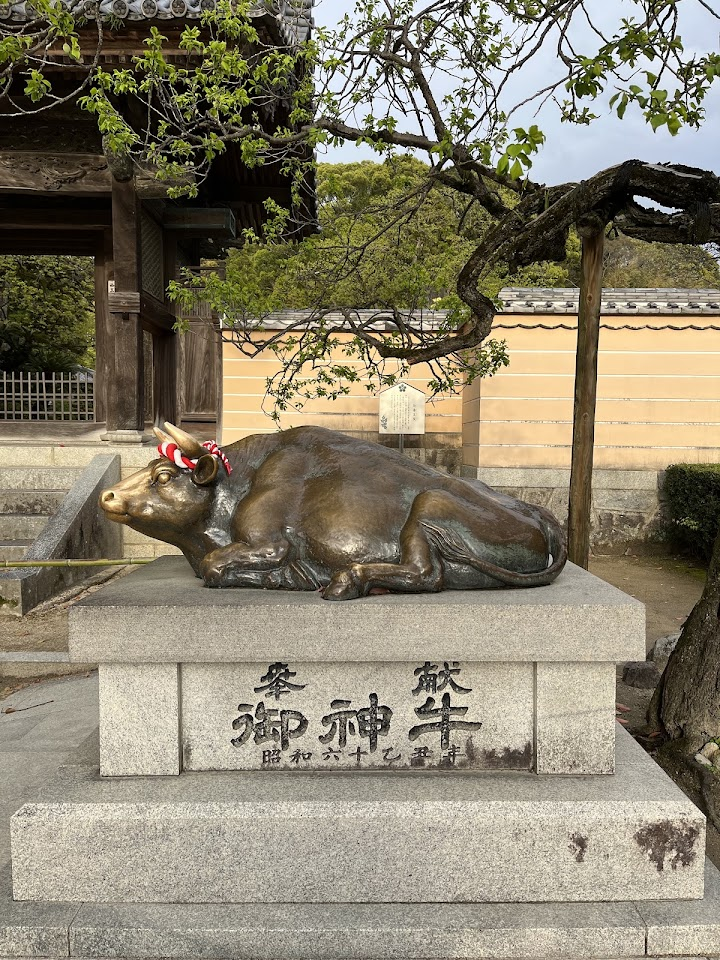

Dazaifu Tenmangu Shrine
Dazaifu Tenmangu is a Shinto shrine dedicated to Sugawara no Michizane, a scholar worshipped as the god of learning, so it fills with students praying for exam success. The grounds have a pond crossed by arched bridges, a museum and many plum trees that flower in late winter, and the approach street is lined with stalls selling umegae mochi, the local rice cake.
Open in Google Maps (street view, more photos and reviews there)






Visitor tips on finding it and getting there
⭐⭐⭐⭐⭐ Dazaifu Tenmangu Shrine ⛩️ Visiting Dazaifu Tenmangu Shrine was definitely one of the highlights of our Fukuoka trip. Scenery: The shrine is absolutely beautiful. The traditional Japanese architecture, well-maintained grounds, and peaceful surroundings make it a place you’ll really appreciate. Every corner is photo-worthy. Atmosphere: Even though there were a lot of visitors during our trip, the place still felt relaxing and full of history. The walk going to the shrine was also enjoyable, with lots of souvenir shops and food stalls along the way. Facilities: The area is clean, orga
Everyone talks about visiting Dazaifu Tenmangu Shrine, and we made the trip over the weekend by taking direct bus 15 from Hakata Station. It took about an hour and was a convenient, easy ride. Dedicated to Sugawara no Michizane, the deity of learning, this historic shrine is over 1,100 years old and remains an active place of worship especially popular among students praying for academic success. Leading up to the shrine is a lively street filled with local shops selling plum-inspired treats, soba, and pastries. Walking through the grounds, crossing the iconic bridges, and exploring the smal
A visit to Dazaifu Tenmangu Shrine is nothing short of awe-inspiring—from the journey getting there to the moment you step into its serene and historic grounds. The approach to the shrine already sets the tone, with a charming path lined with shops and traditional scenery that slowly immerses you into its cultural atmosphere. As you walk deeper in, the views open up to stunning temple grounds that feel both grand and peaceful at the same time. The main shrine is the highlight—its architecture is striking, and what truly stands out is the seemingly “floating forest” atop the structure. It’s a